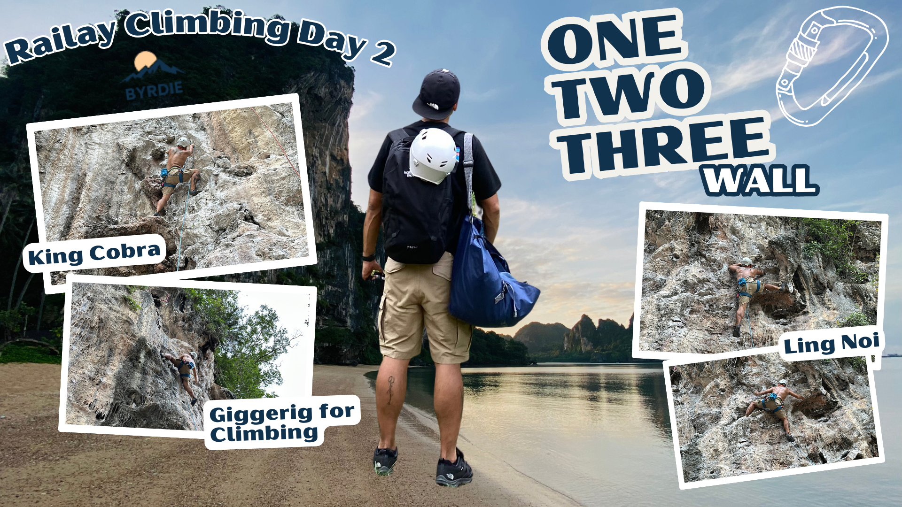
Railey Beach, Krabi, Thailand
The 4th Stop: Climbing & Code Adventures
Hey fellow climbers! Welcome to my climbing blog! Here, I share personal stories, adventures, and insights from my journey as an amateur climber.
A quick note: this blog is all about my experiences, not a professional guide or technical resource. It also doubles as my playground for experimenting with web development—so don’t be surprised if you notice some design changes along the way!
Let’s get started on today’s story.
Exploring Ao Nang Before Climbing
On Tuesday, December 10th, I woke up early—5:45 AM to be exact. With my Krabi climbing trip nearing its end, I wanted to make the most of the day despite the exhaustion from three consecutive days of climbing.
I laced up my running shoes and headed to
Ao Nang
. The sunrise was breathtaking, painting the horizon in warm orange and red tones. As I ran past the iconic
Sailfish statue
, I wondered what lay beyond the bustling beach and decided to find out.
Discovering Noppharat Thara Beach
About 2 kilometers away, I reached
Noppharat Thara Beach
. It was quieter and more serene, with fewer buildings and more nature. Leaving the pathway for the beach, I was surprised when a friendly dog joined me on my run—it felt like a little adventure.
Looking back, the view of Ao Nang from a distance was stunning: golden limestone cliffs glowing in the morning sun, set against the light blue sea.
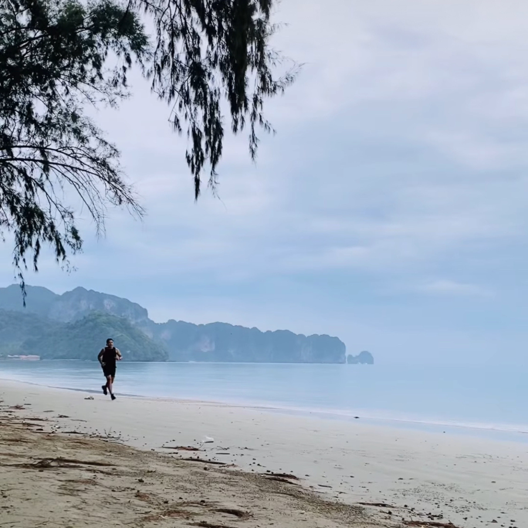
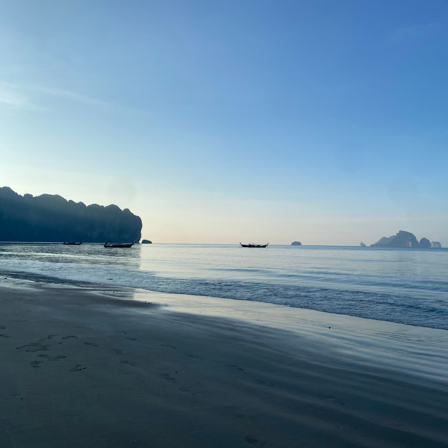
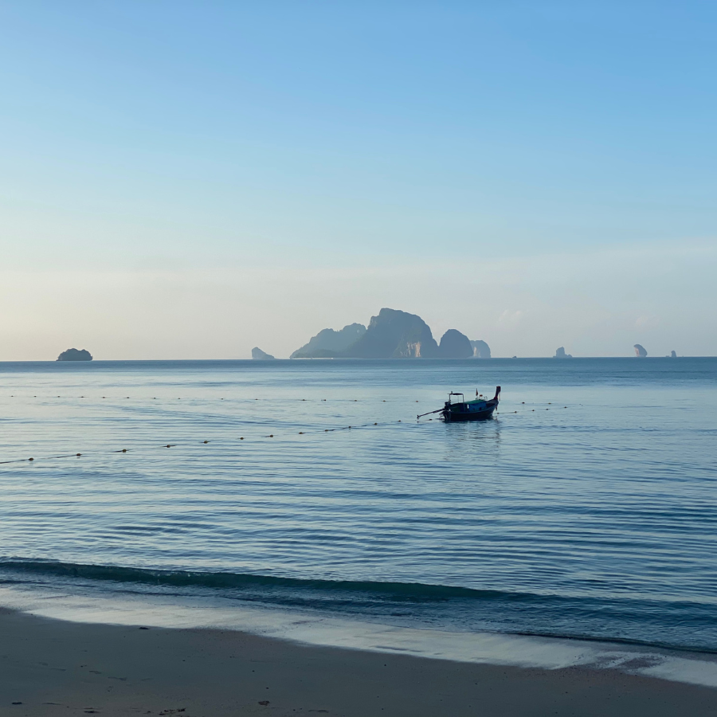
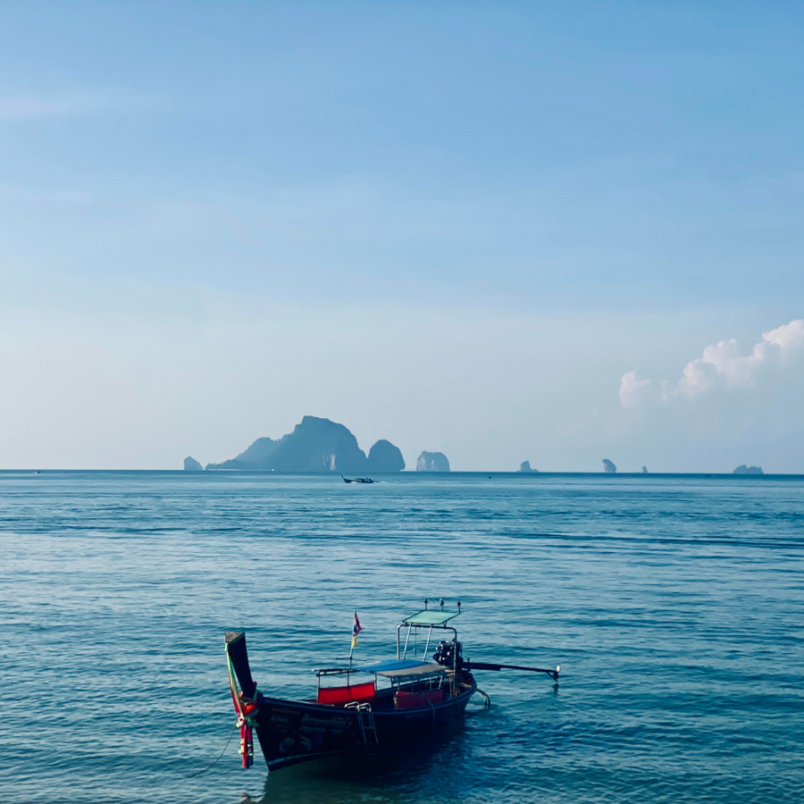
A Hidden Island and a Perfect Morning
Continuing my run, I reached a hidden gem about 4 kilometers from Ao Nang. The water was crystal clear, and the low tide revealed a path to a small island. From there, I could see remote islands dotting the horizon—something you wouldn’t spot from Ao Nang.
If you’re ever in the area, this route is perfect for a peaceful morning run. It’s an experience, I’ll definitely repeat on my next visit.
Day 4 of Krabi Climbing: Railay Beach Adventures
It was around 8:30 a.m. when I returned to my hotel, still buzzing from the incredible 10K running route. The scenery was breathtaking, and I felt so energized! After a quick shower, I packed my climbing gear for day four of my Krabi climbing trip and day two at Railay Beach.
Curious about my adventurous and beautiful days climbing at
The North Wall (Day 1) or
The North Wall (Day 2)? Or perhaps you'd like to hear about my exciting experiences on
Day 3 at Railay Beach?
The Scenic Ferry Ride to Railay Beach
One of the best parts of staying in Ao Nang and climbing at Railay is the 15-minute ride on a wooden passenger ferry boat. The commute is so scenic and peaceful that I wouldn't mind doing it every day. I arrived at Railay West, where the ferry drops off passengers, and met the two remaining climbers from our group. It was their last day in Krabi, with a flight to catch later that evening. Climbers have a universal habit of squeezing in as many climbs as possible, even on the day of departure!
Pro Tip: If you're staying in Railay and need to get to Krabi Airport, plan to take the ferry at least 3.5 hours before your departure. While the distance isn't far, unexpected traffic or delays could complicate your journey.
Exploring One-Two-Three Wall
Today, we headed to the One-Two-Three Wall, located at
East Railay Beach
. The route from Railay West to the wall is straightforward—just follow the walking street for less than 1 km. There's no hiking involved, just a short walk along a concrete path and some sand.
This side of Railay Beach is livelier, with many tourists and climbers. According to the Crag website,
One-Two-Three Wall is popular for beginner-friendly routes, making it a go-to spot for climbing schools. The energy here is fantastic, with both professionals and beginners scaling routes of all grades.
Warm-Up Route: Giggerig for Climbing
We started the day with a warm-up climb on "Giggerig for Climbing," a beginner-friendly route that’s great for building confidence. You can find more details about this route on
the Crag website
.
Favorite Climb of the Day: King Cobra
My favorite climb of the day was
"King Cobra"
a 5-grade route about 13 meters high. The route's unique design, resembling a building with various floors, made it both fun and challenging. However, the first bolt was quite far!
The climb was full of jugs and holds, which I love. Halfway up, I struggled to find a hold until my friend shouted, "There’s a jug inside the gap—it’s shaped like a cobra!" As someone terrified of snakes, this wasn’t reassuring! I cautiously reached into the gap, praying it wasn’t a real cobra, and found the jug. It was such a satisfying moment! The rest of the climb was smooth and enjoyable, making King Cobra the highlight of my day.
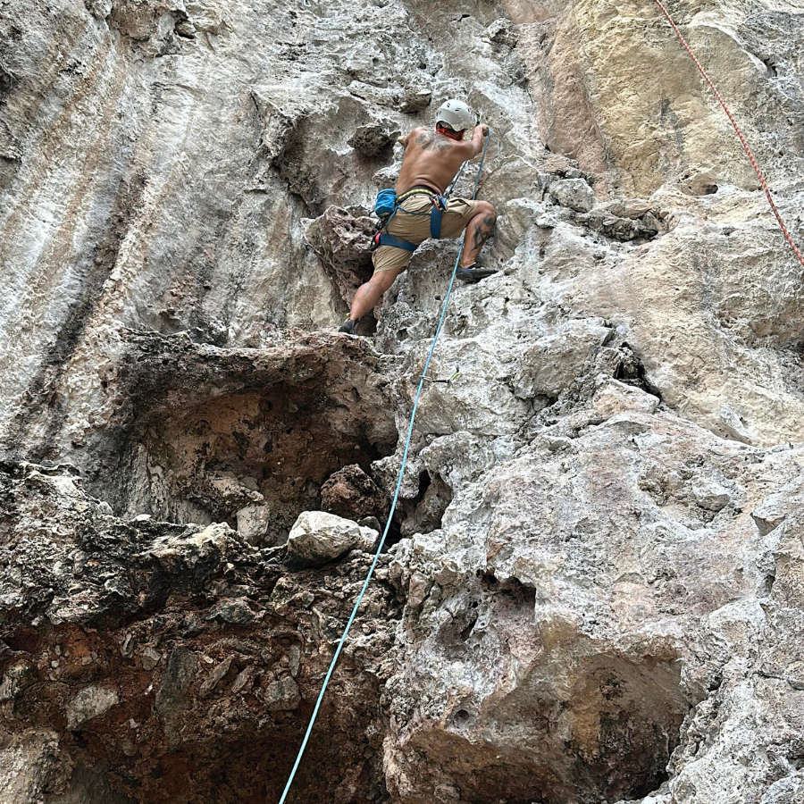
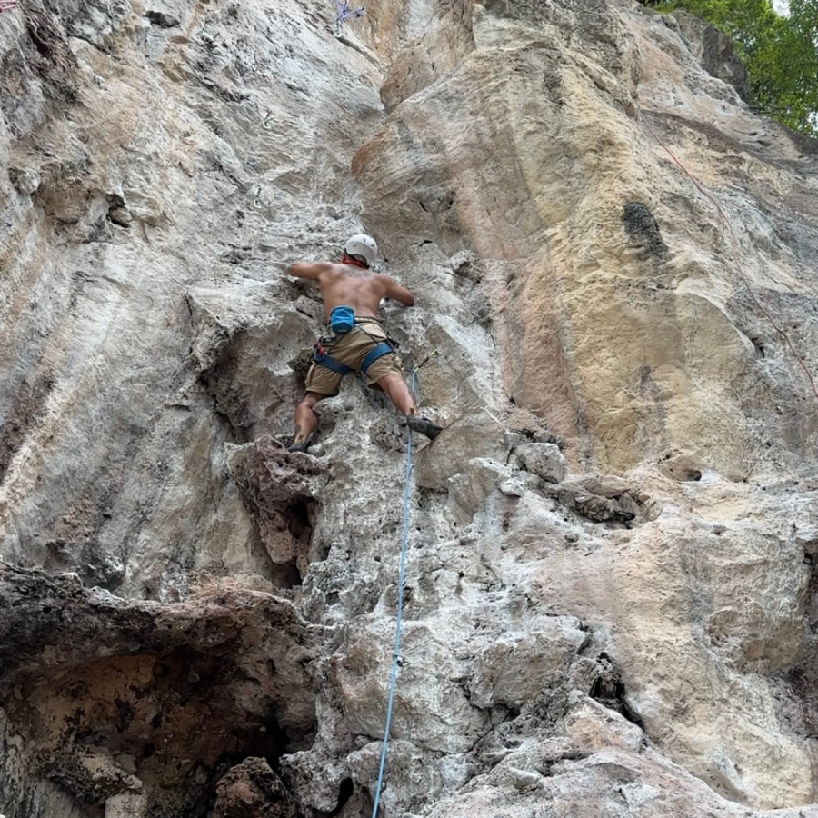
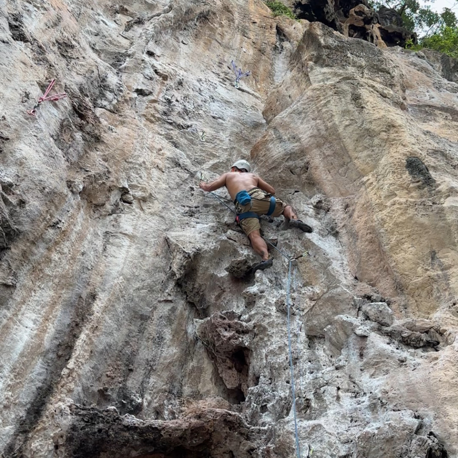
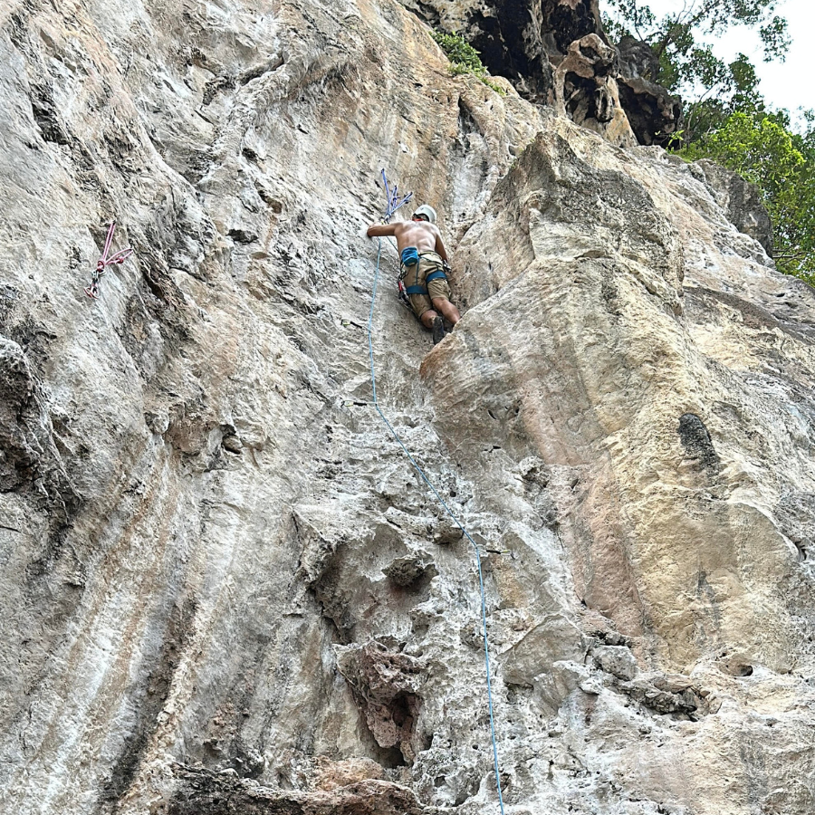
Second Favorite: Ling Noi (Little Monkey)
Another standout climb was
"Ling Noi"
or "Little Monkey" in English. This 5-grade route had a challenging start, with an overhang at the first bolt. I decided to have my friend clip the first bolt for me to avoid unnecessary strain or injury.
Once the first bolt clipped, the rest of the climb was smoother, except for a crux at the third bolt that required commitment. Near the top, I encountered a rock feature that stuck out like a tiny island. I climbed onto it and sat there briefly, realizing how the route got its name—it felt like I was a monkey perched on the rock!
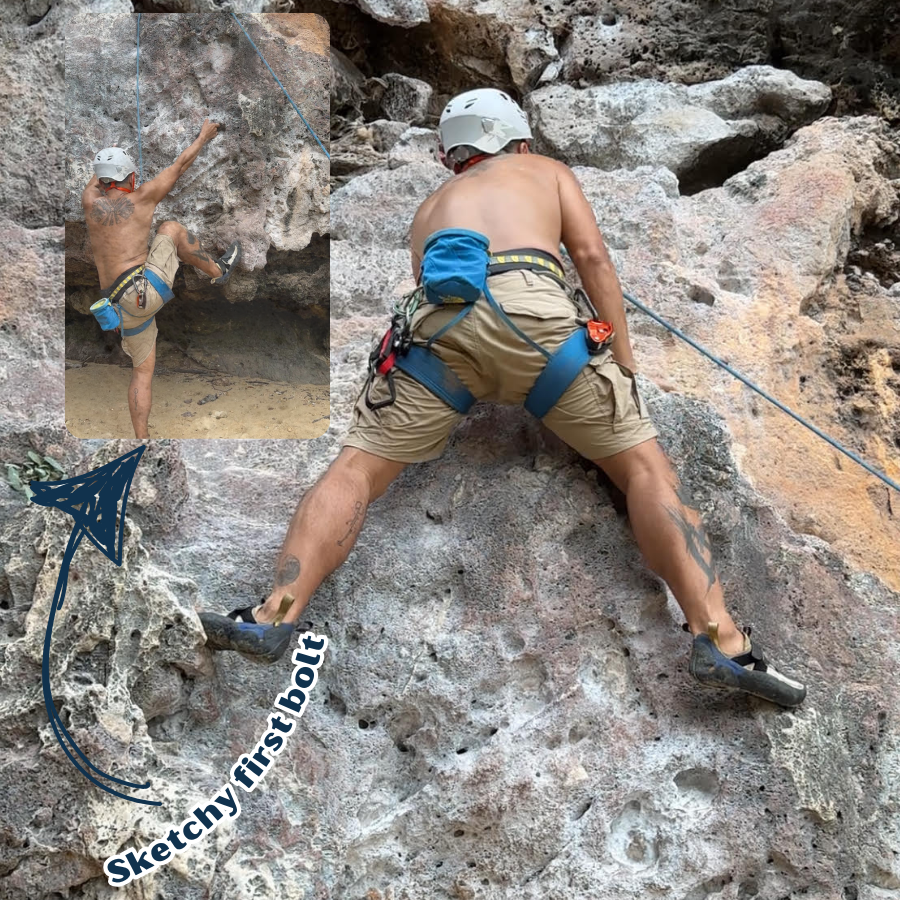
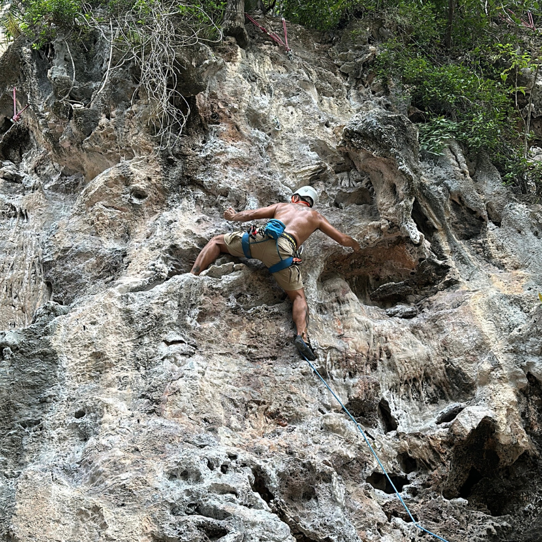
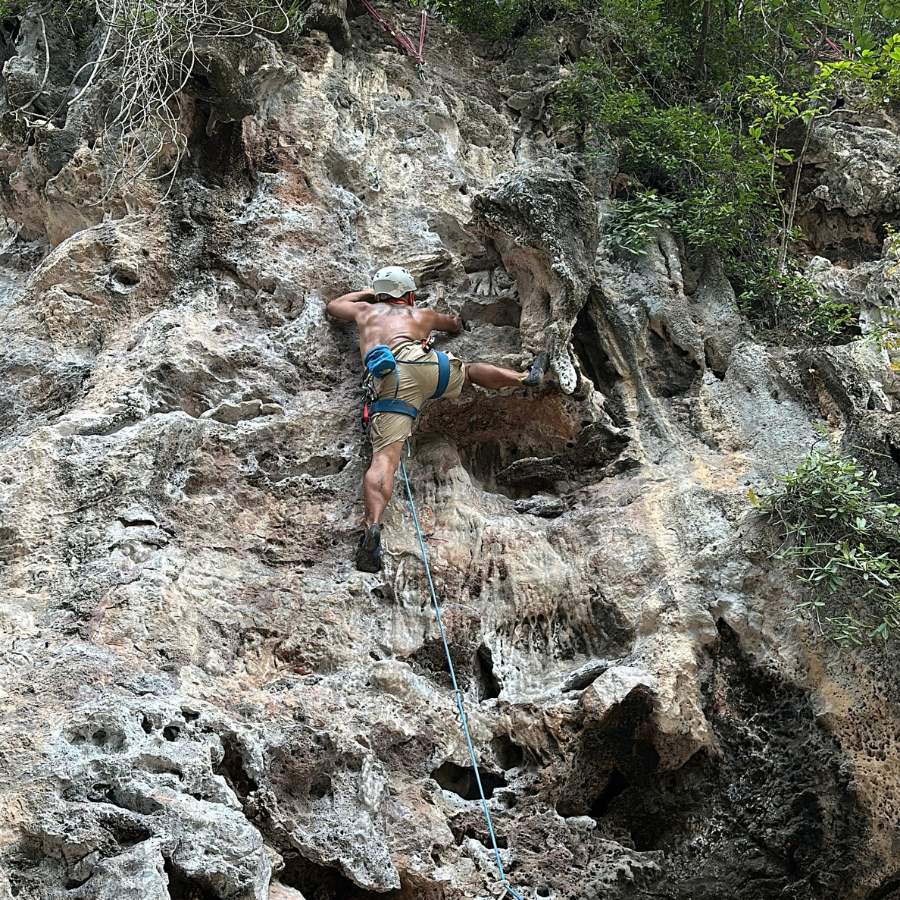
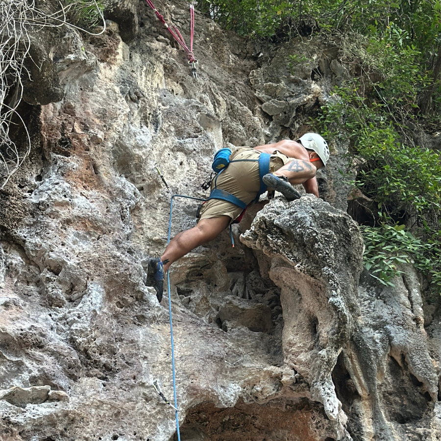
Reflecting on the Krabi Climbing Experience
By 2 p.m., we were exhausted after climbing four days straight. My friends had flights to Bangkok that evening, and we couldn’t believe how quickly the trip flew by. Despite the fatigue, none of us wanted the adventure to end.
Before I started climbing, I never understood the deeper meaning of experiences. Vacations were just about having fun. But climbing taught me that trips like this take preparation, effort, and learning, which makes the experience far more rewarding.
This trip left me inspired to work harder and return with more skills and a fresh mindset. As we took the ferry back to Ao Nang, we began planning our next adventure—a New Year climbing trip to Lopburi, Thailand, famously known for its monkey gangs.
Coming Up Next on ByrdieOnTheRocks
This marks the end of part four of my Krabi climbing trip. In my next blog, I’ll share highlights of the trip, my favorite routes, local food, and costs for amateur climbers in Krabi.
Until then, thanks for reading
ByrdieOnTheRocks :)